Assignment 2 ·
Underwater segmentation
Deep Learning on Large-Scale Data and Specialized Tasks.
Problem statement
The task is to label each pixel in an underwater photograph as water, a diver, marine life, vegetation, a robot, a wreck, a reef or the sea floor. We compare a model trained from scratch with a pretrained model, focusing on rare classes and object boundaries.
Dataset and EDA
SUIM pairs underwater photographs with colour-coded masks that label every pixel. Its varied scenes and uneven class frequencies let us compare segmentation quality on common and rare objects.
The eight classes are waterbody (BW), divers (HD), plants and sea-grass (PF), wrecks (WR), robots and instruments (RO), reefs and invertebrates (RI), fish and vertebrates (FV), and sea-floor and rocks (SR).
We resize images and masks to 320 × 240 pixels. The model assigns one of the eight classes to each pixel to produce a predicted mask.

Data quality and splits
The archive contains 1,635 image–mask pairs. Every file decodes and every image has a mask. We exclude 85 training-pool pairs whose masks contain colours outside the eight class codes. These include all 37 masks that are taller than their images.

Ten training-pool images duplicate official test images. We remove the training copies and retain all 110 test pairs, leaving 1,540 usable pairs.

The remaining training pool contains 55 duplicate groups covering 115 images. Duplicate groups stay together when we split the pool into training and validation, using seed 42 and each image's rarest class to balance the split. All eight classes appear in both sets.
| Split | Pairs | Use |
|---|---|---|
| Training | 1,143 | Fit model parameters. |
| Validation | 287 | Select checkpoints and compare configurations. |
| Official test | 110 | Reserved for final evaluation. |
All model scores on this page use the 287 validation images. The official test set has not been evaluated in the results reported here.
Class balance and image sizes
Reefs occupy 35.64% of usable training-pool pixels, while robots occupy 0.56%. Only 69 training images and 17 validation images contain robots.


The 1,540 usable pairs span 11 image sizes. About 84% are 640 × 480 pixels. Resizing to 320 × 240 reduces detail in small objects and thin boundaries.

Methodology
We pair each photograph with its mask and resize both to 320 × 240 pixels, using bilinear interpolation for images and nearest-neighbour interpolation for masks. We decode mask colours into class labels and normalize images with ImageNet statistics. During training, we randomly flip each image and its mask together.

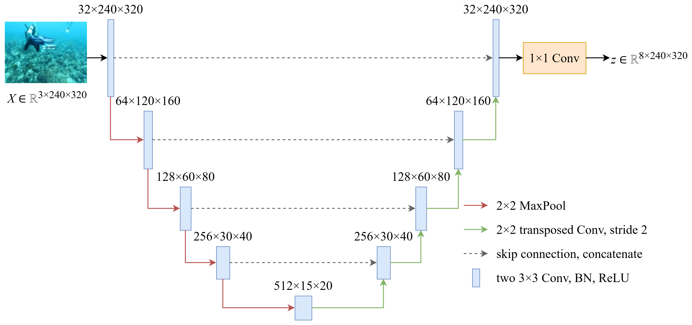

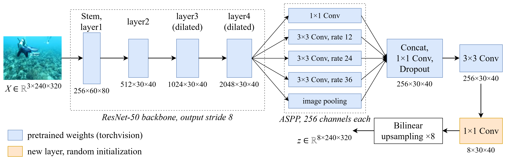
Both baseline configurations use cross-entropy over all eight classes. DeepLabV3 fine-tunes the backbone at a base learning rate of 0.0001 and its classifier at 0.001. BatchNorm running statistics remain fixed; its affine parameters and the rest of the network still train. U-Net uses one base learning rate of 0.001.
The checkpoint with the highest validation mIoU supplies the reported metrics. IoU and Dice are computed from confusion counts accumulated over the whole validation split, then averaged equally across all eight classes, including background. The reported convention assigns zero to an absent-class denominator and ignores no labels.
Experimental setup
Both baseline comparison runs use seed 42, the committed data split, 320 × 240 inputs, AdamW with weight decay 0.0001, float32 training, and a 40-epoch budget. The learning-rate schedule uses five warm-up epochs followed by cosine decay. Both accumulate gradients over four minibatches.
| Setting | U-Net | DeepLabV3 |
|---|---|---|
| Run ID | suim_unet_seed42 | suim_deeplabv3_ce_seed42_2gpu |
| GPU | RTX 4060 Laptop GPU | 2 x RTX 3090 |
| Physical batch per GPU | 4 | 4 |
| Effective batch | 16 | 32 |
| Python | 3.12.3 | 3.11.11 |
| PyTorch / CUDA build | 2.14.0+cu130 / 13.0 | 2.14.0+cu126 / 12.6 |
Experimental Results
| Model | Completed epochs | Best epoch | mIoU (%) | Mean Dice (%) |
|---|---|---|---|---|
| U-Net | 40 | 38 | 36.94 | 48.05 |
| DeepLabV3 | 40 | 23 | 61.05 | 73.00 |
DeepLabV3 exceeds the U-Net baseline by 24.11 percentage points in mIoU and 24.95 points in mean Dice in these runs. Each configuration was trained once, so these differences have no across-seed uncertainty estimate.

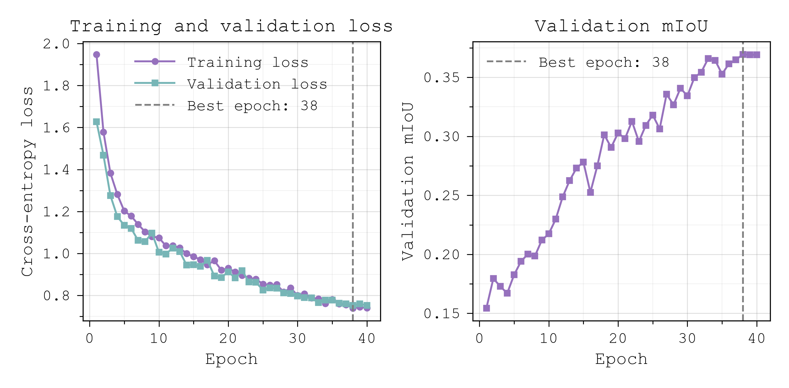

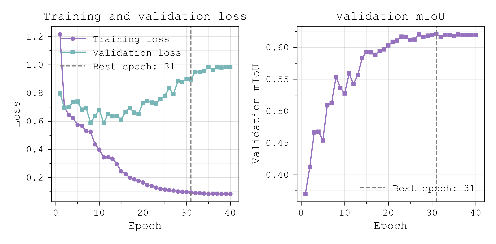
At epoch 40, U-Net records train/validation cross-entropy of 0.7400/0.7526. DeepLabV3 ends at 0.0906/1.0193, with validation mIoU 60.65%, below its selected maximum of 61.05%. The DeepLabV3 loss gap is consistent with late overfitting, although the runs do not isolate its cause.
Class-level comparison
| Class | U-Net IoU (%) | DeepLabV3 IoU (%) |
|---|---|---|
| BW: Background waterbody | 80.62 | 84.46 |
| HD: Human divers | 30.83 | 69.47 |
| PF: Plants and sea-grass | 0.00 | 10.36 |
| WR: Wrecks and ruins | 41.16 | 69.70 |
| RO: Robots and instruments | 0.00 | 66.70 |
| RI: Reefs and invertebrates | 67.94 | 72.95 |
| FV: Fish and vertebrates | 33.14 | 65.46 |
| SR: Sea-floor and rocks | 41.85 | 49.30 |
U-Net scores zero IoU on PF and RO, despite both classes being present in validation. DeepLabV3 reaches 66.70% robot IoU, but plants remain difficult at 10.36%. Aggregate improvement therefore does not imply that every class is well segmented.
The larger pretrained model performs better in this observed comparison. Architecture, parameter count and effective batch also change, so the result cannot establish how much improvement is caused by pretraining alone.
Input and output examples
Three saved DeepLabV3 validation predictions show what the trained model produces. Each row reads left to right: the input photograph, the ground-truth mask supplied by SUIM, and the model's predicted mask. Colours represent semantic classes, not prediction confidence; matching colours indicate matching class labels.
These are the saved best, worst and best robot-containing examples, ranked by per-image mIoU over classes present in either the target or prediction. They illustrate successful segmentation and failures; they are selected cases rather than a random sample or a replacement for the split-wide metrics.

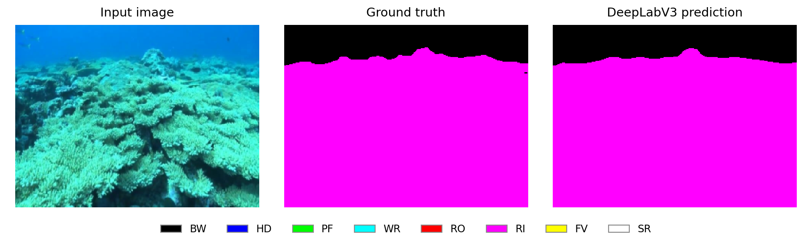
f_r_274_. The prediction follows the water/reef boundary closely. Black is waterbody (BW); magenta is reef (RI). This is the highest-ranked saved validation example.
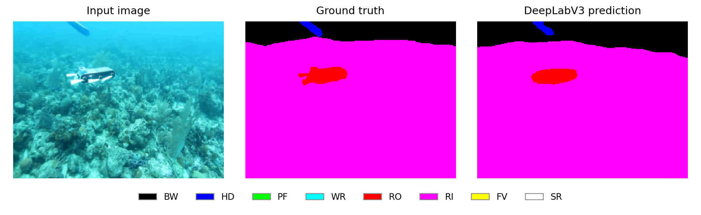
d_r_404_. The red robot region (RO) is detected, although its outline is smoother than the annotation and some fine structure is missed. This is the highest-ranked robot-containing validation example.
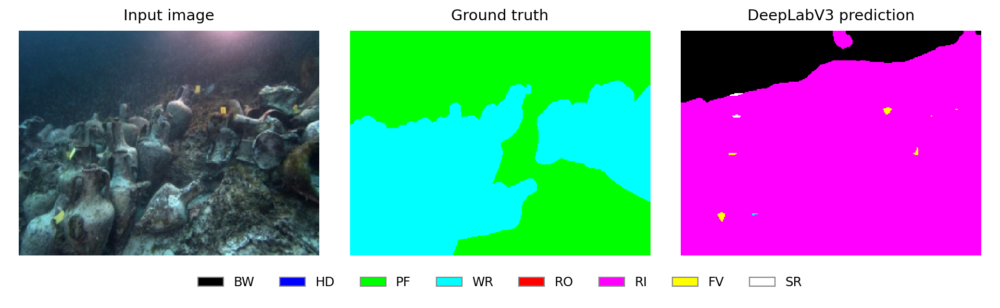
w_r_162_. The annotation contains plants (PF, green) and wrecks (WR, cyan), but the prediction labels most of the scene as reef (RI, magenta) and water (BW, black). This is the lowest-ranked saved validation example.The colour key follows SUIM: BW = waterbody, HD = divers, PF = plants, WR = wrecks, RO = robots, RI = reefs, FV = fish, and SR = sea-floor. Open any figure to inspect it at full size. Equivalent U-Net prediction panels are not available in the current saved outputs, so these figures do not provide a paired visual comparison of the two models.
Controlled experiments
We use DeepLabV3-ResNet50 as the reference and change one factor per run: backbone freezing, horizontal flips, backbone depth, loss or input resolution. All six runs share seed 42, the same data split and 40 training epochs. We use one GPU with batches of four and accumulate four batches per update, giving an effective batch of 16.
We keep AdamW, weight decay 0.0001, backbone and head learning rates of 0.0001 and 0.001, five warm-up epochs and cosine decay fixed. BatchNorm running statistics also stay fixed. We select each checkpoint by its highest validation mIoU.
Our reference fine-tunes the full pretrained network with horizontal flips, cross-entropy and 320 × 240 inputs. For the half-resolution run, we resize output scores to 320 × 240 before assigning class labels. The combined loss weights cross-entropy and per-image macro soft Dice equally across all eight classes. We calculate differences against this reference, whose effective batch of 16 differs from the earlier two-GPU run's 32.
| Configuration | Change from reference | Best epoch | mIoU (%) | Mean Dice (%) | Δ mIoU (pp) |
|---|---|---|---|---|---|
| Reference | Full ResNet50 fine-tuning, flips, CE, 320 × 240 input | 31 | 62.40 | 74.17 | 0.00 |
| Frozen backbone | Freeze the backbone; train the segmentation head | 31 | 54.22 | 67.43 | -8.18 |
| No augmentation | Remove horizontal flips | 21 | 60.74 | 73.05 | -1.66 |
| ResNet101 | Replace ResNet50 with ResNet101 | 36 | 62.45 | 73.99 | +0.05 |
| CE + Dice | Use 0.5 CE + 0.5 soft Dice | 39 | 62.27 | 74.12 | -0.13 |
| Half resolution | Reduce input to 160 × 120 | 30 | 56.07 | 69.06 | -6.33 |

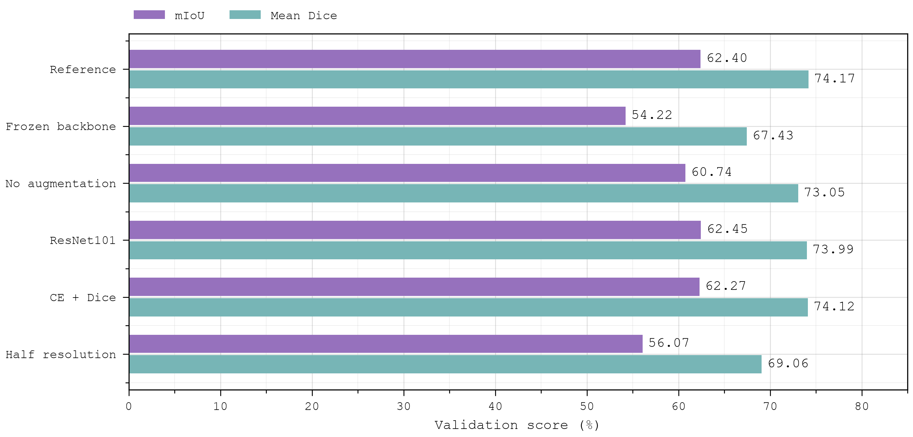

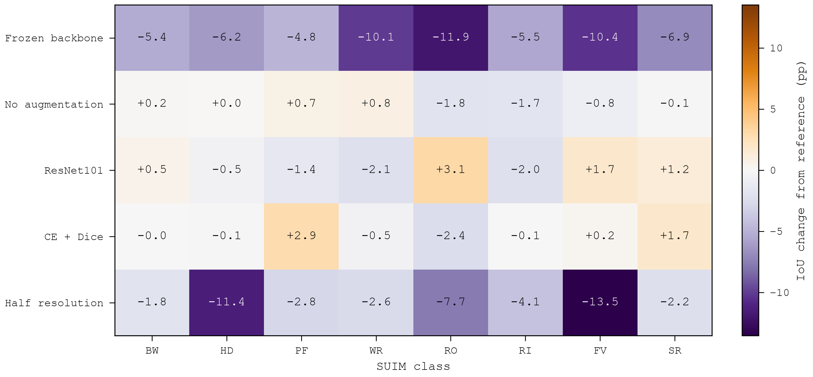

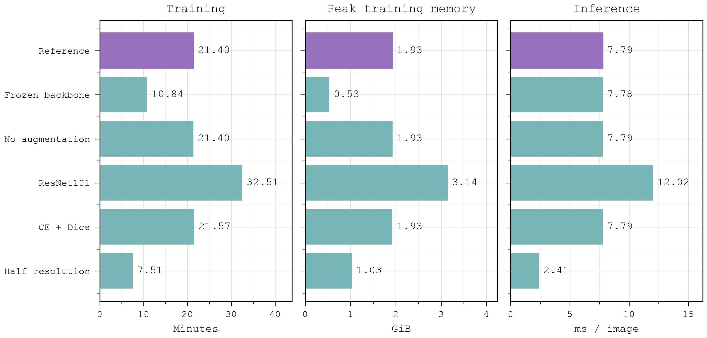
We retain the full ResNet50 reference for final evaluation. It scores higher than the frozen, unaugmented and half-resolution variants, while the larger backbone and combined loss give similar overall scores. These single-seed results do not establish a reliable advantage for either alternative. Halving the input resolution also lowers boundary mIoU from 30.42% to 25.75%.
Error analysis
We most often confuse plants with reefs: DeepLabV3 labels 77.59% of plant pixels as reef. The confusion matrix below covers all 287 validation images.

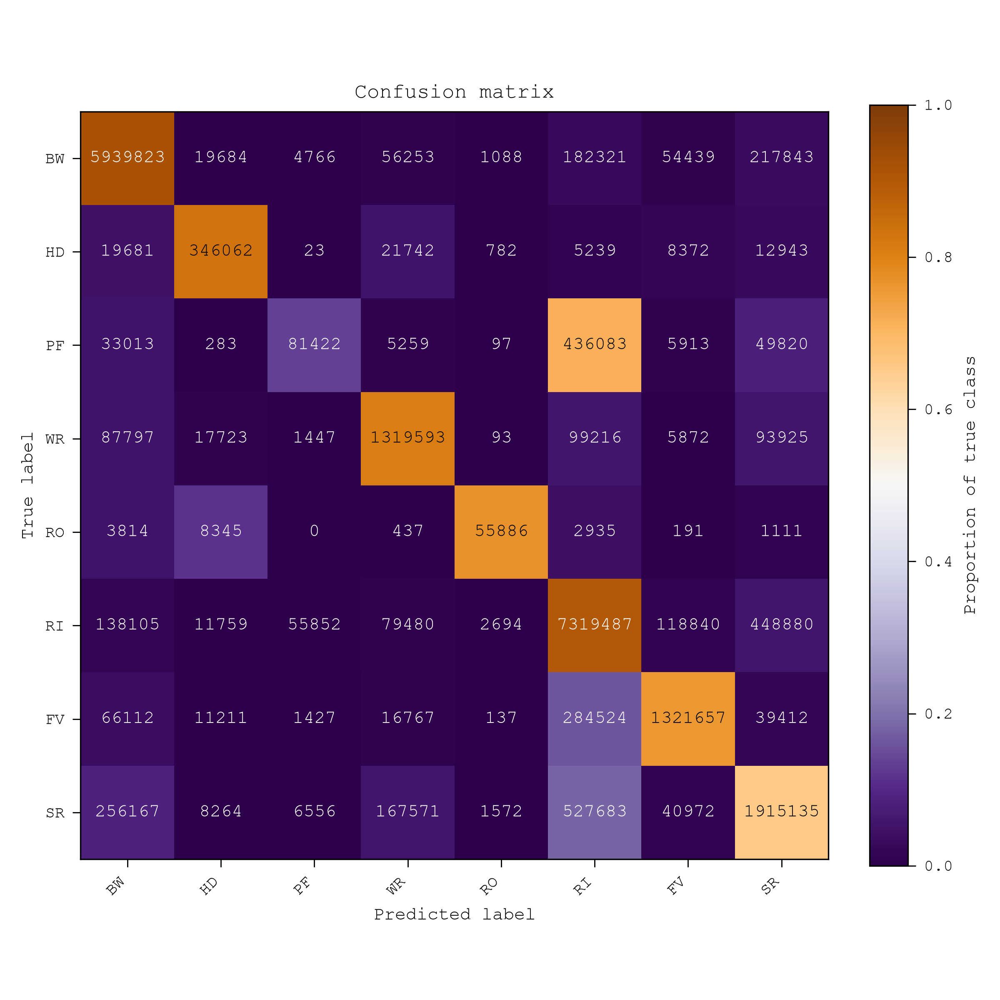
Both models struggle at object boundaries. DeepLabV3 reaches 29.12% boundary mIoU against 63.30% in the interior. U-Net drops from 37.88% in the interior to 18.04% at boundaries.

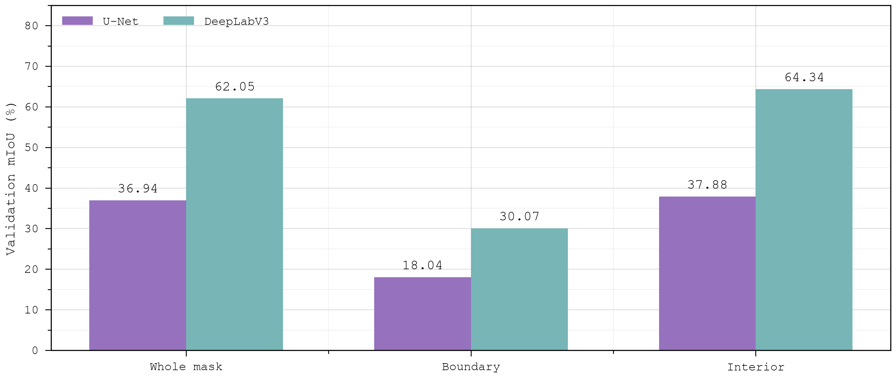
Performance also varies across images. DeepLabV3 has a median per-image mIoU of 53.96%. This differs from the 61.05% split-wide score, which pools pixels before computing class IoU.

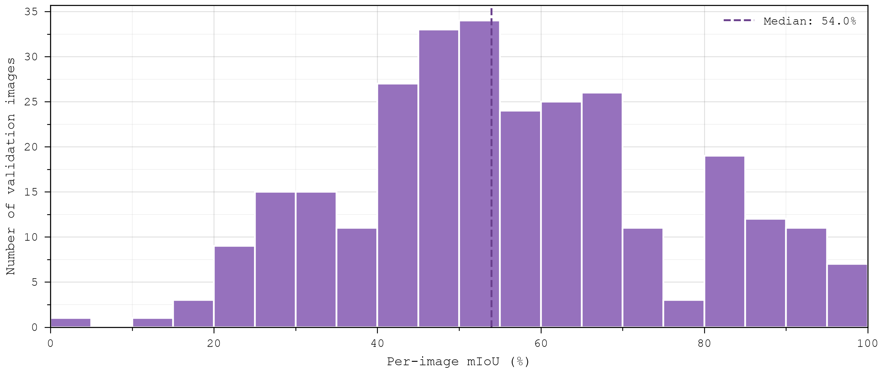
We selected the lowest-IoU plant and robot examples to inspect rare-class failures. When scores tie, we choose the largest labelled region, then the filename. Both selected classes have zero IoU.

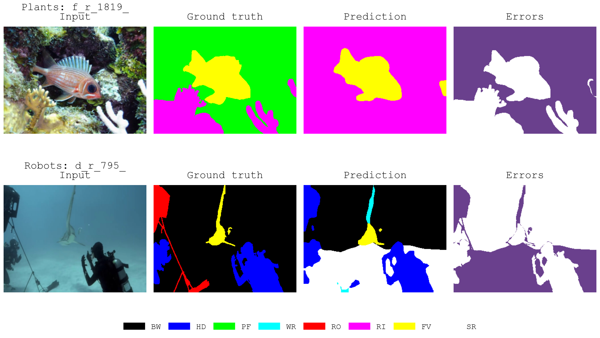
f_r_1819_, with plants covering 67.7% of the target. Robot failure: d_r_795_, with robots covering 5.1%. Purple marks every incorrectly labelled pixel. These are selected failures, not a random sample. Vector PDF.Compute cost
| Measurement | U-Net | DeepLabV3 |
|---|---|---|
| Training time (s) | 894.97 | 509.48 |
| Peak allocated training memory (MiB) | 996.42 | 2,106.98 |
| Validation inference (s) | 1.390 | 1.402 |
We trained U-Net on an RTX 4060 Laptop GPU and DeepLabV3 on 2 x RTX 3090. Peak memory is measured per process on one GPU. These timings reflect different hardware and training settings.
Limitations
We trained each configuration with one seed, so we cannot measure variation between training runs. The U-Net and DeepLabV3 comparison also changes architecture, pretraining, effective batch size and hardware. We cannot attribute the score difference to pretraining alone or compare their speed directly.
Resizing can remove small objects and thin boundaries, and plant segmentation remains weak. Duplicate filtering does not rule out related scenes across splits.
Evidence and reproduction
We generate the controlled-experiment figures from the comparison CSV and resolved configurations linked below. The error-analysis figures use the saved validation summaries and DeepLabV3 prediction masks.
uv run python -m scripts.plots.plot_segmentation_ablation
uv run python -m scripts.plots.plot_segmentation_errors- Source code: week7 branch
- Dataset proposal: SUIM task, exclusions, splits and experiment plan
- EDA and split files: EDA outputs · Committed train/validation lists
- U-Net run: Training summary and resolved configuration
- DeepLabV3 run: Training summary · Validation metrics and confusion counts · Run configuration
- Installation, training and evaluation: README reproduction commands
- Controlled study: Comparison CSV · Resolved configurations · Figure reproduction command
- Error analysis: Per-image scores and failure selections
- Final deliverables: checkpoint downloads, the final PDF report, slides and presentation video are not yet linked on this page.
Group members
| Full name | Student ID | Assignment 2 responsibility |
|---|---|---|
| Vu Duc Viet Anh | 2352074 | SUIM data loader and augmentation, EDA and assignment page. |
| Tran Lam Anh | 2352067 | Pretrained DeepLabV3 implementation and fine-tuning. |
| Le Nguyen Khang | 2352470 | Segmentation metrics, preliminary evaluation and qualitative examples. |
| Tran Nguyen Giap | 2352284 | U-Net baseline implementation and training. |